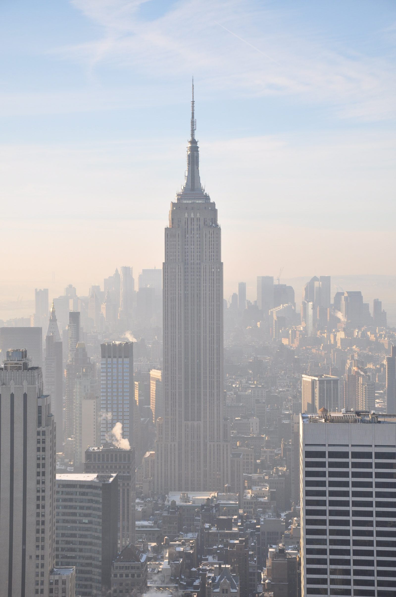

At the top of Corcovado mountain, in Rio de Janeiro, Brazil, stands the country's best-known image. Inaugurated on 12 October 1931, it turns 95 on 12 October 2026. Few people know how it came to stand.
The documented story is better than the legend: a reinforced-concrete statue, a solution that engineers of the time said was being applied for the first time to a monument of this kind, with the head and hands modeled in Paris, the skin glued on by hand by women volunteers, and a construction record in which several numbers were simply never recorded. Where the source is missing, this page says it is missing.
FACTSFact sheet
| Original idea | Lazarist priest Pedro Maria Boss, in the 1850sthe Sanctuary gives the year 1859; other sources, only the decade | 2+ sources |
|---|---|---|
| Who wanted it and why | The Catholic Circle of Rio de Janeiro, in 1921, for the Centenary of Independence (1922); a petition with more than 20,000 signatures | 2+ sources |
| Land | Granted by the government | 2+ sources |
| Design | Engineer Heitor da Silva Costa, winner among three proposals; drawings in collaboration with the painter Carlos Oswaldthe year of the competition varies between 1921, 1922 and 1923 depending on the source | 2+ sources |
| Sculpture | Paul Landowski, in Paris: contract on 3 November 1924; head and hands at full size, in plasteraccording to Landowski's official chronology | 1 source |
| Structure | Reinforced concrete; in 1928 a commission replaced the metal framework with an internal concrete trussthe calculations are attributed to Albert Caquot by French sources | 2+ sources |
| Running the site | Heitor Levy, master builder, lived on Corcovado from 1926 to 1931; Pedro Fernandes Viana da Silva, inspecting engineer | 2+ sources |
| Workers | Nobody recorded, in a verifiable source, how many there were, how much they earned or what the peak of the work wasa 2011 text speaks of nearly a thousand people, without saying where the number came from | no record |
| Timeline | Foundation stone in 1922; building work at the top from 1926 to 1931 | 2+ sources |
| Inauguration | 12 October 1931, with Cardinal Sebastião Leme and President Getúlio Vargas | 2+ sources |
| Cost | 2,500 contos de réis, according to the Christ the Redeemer Sanctuary; paid for with donations from Brazilian believersthe conversions to today's money that circulate do not state their method; that is why they are not given here | 1 source |
| Deaths and accidents | There is no record of any death; the claim comes from the Archdiocese and from the testimony of the master builder, who said there had been "nothing abnormal"no independent source confirms or refutes it | no record |
| Total weight | 1,145 t according to Landowski's chronology and National Geographic; 635 t according to New7Wonders and the press | disputed |
| Altitude of the summit | 704 m according to ICMBio; 709 to 710 m in other sources; 700 m according to New7Wonders | disputed |
| Cladding | Soapstone triangles 3 cm on a side and 7 mm thick, glued onto strips of cloth; the total number of pieces nobody counted | 2+ sources |
| Afterwards | Restorations in 1980, 1990, 2010 and 2017–2021; statue listed as heritage by IPHAN in 2008; voted one of the New Seven Wonders on 7 July 2007 | 2+ sources |
01A seventy-year-old idea
The idea is older than the Republic. In the 1850s, the Lazarist priest Pedro Maria Boss imagined a religious monument on top of Corcovado. It never left the drawing board.
It came back in 1921, through the Catholic Circle of Rio de Janeiro, with a date in sight: the Centenary of Independence, in 1922. A petition with more than 20,000 signatures reached President Epitácio Pessoa, and the government granted the land. Still in 1922, the foundation stone was laid at the top of the mountain.
The main thing was still missing. Nobody knew yet what the statue would look like, nor how to get it up there.
.jpg){kind=link}
02The first Christ did not open his arms
The design chosen, out of three, was that of the engineer Heitor da Silva Costa. And the first Christ he drew was not the one known today: it held a globe in one hand and a cross in the other.
That drawing was abandoned. In the final version, in Silva Costa's own words to the magazine O Cruzeiro, in 1931, the cross became the body of the statue, and the globe went beneath its feet.
Where did the open-armed pose come from? According to Silva Costa himself, from a radio antenna that Westinghouse installed on Corcovado in 1922. The painter Carlos Oswald worked on the drawings with him, and some attribute the pose to Oswald; that has never been demonstrated.
The choice had an enormous consequence. A statue with open arms on top of a peak is a statue with two cantilevered arms, facing the wind with nothing underneath.
.jpg){kind=link}
03The problem was the place
Corcovado is a granite needle in the middle of the city. The top is some 700 m above the sea, and it is small. There was nowhere to set up a large building site.
There was a train. The Corcovado Railway, opened on 9 October 1884, climbs 3,824 m through the forest, and in 1910 it became Brazil's first electric railway. The building materials went up by it.
Up there, the workers worked on scaffolding over the precipice, without the protection that would be mandatory today, according to a 2021 report by Agência Brasil. The master builder, Heitor Levy, lived on top of the mountain throughout the five years of building work, from 1926 to 1931.
.jpg){kind=link}
04Concrete, not bronze
A monument like this, in the 1920s, would have been made of bronze, of stone, or of sheet metal over an iron skeleton, like the Statue of Liberty. The Christ is none of these things: it is reinforced concrete, with a concrete plant set up on the summit itself.
Silva Costa called the material "the exponent of our age". The engineer Arrojado Lisboa wrote in 1931 that it was a solution applied for the first time to a monument of that nature.
In 1928, with the work under way, a technical commission replaced the planned metal framework with an internal reinforced-concrete truss. French sources attribute the calculations to the engineer Albert Caquot. According to Cimento Itambé, the statue rests on four central pillars, with a foundation 4 m into the rock.
Inside, the statue is hollow: 12 platforms connected by stairs, with exits in the arms and the head, for maintenance. From outside it looks like a solid sculpture. Inside, it is a building.

05The head came from Paris, in pieces
The form came out of a studio in France. Silva Costa met the sculptor Paul Landowski in Paris in May 1924, and the contract was signed in November. Landowski worked on ever larger models: one of 40 cm, another of 2.30 m and the final one, of 4 m, sent by ship to be enlarged in Brazil.
The head and the hands he made at full size, in plaster. The head is 3.75 m tall and weighs 30 t; each hand measures 3.20 m. Cut into blocks, they crossed the Atlantic in 1928. According to the Sanctuary, the head alone came in 50 numbered parts. Landowski's chronology records the head assembled on the summit on 10 June 1930.
Some sources attribute the face to the Romanian sculptor Gheorghe Leonida, from the studio. Landowski's official chronology does not mention him, and the attribution remains unconfirmed.

06A skin of triangles
The concrete does not show. The whole statue is clad in soapstone, and this skin is not made of slabs: it is made of triangles 3 cm on a side and 7 mm thick, glued onto strips of cloth that were then applied over the concrete.
According to the Archdiocese, Silva Costa took the idea from a mosaic-covered fountain in the Galerie des Arcades, on the Champs-Élysées, in Paris, in early 1927. The technique was tested the same year at Gentil & Bourdet, in Boulogne-Billancourt, France.
The triangles were glued by women volunteers. Some wrote, on the back of the pieces, the names of husbands, children and relatives, on the side that would face the concrete, according to the book by Maria Augusta Machado cited by Emerson Giumbelli. Whether any of those names is still there, after so many restorations, nobody knows: only by tearing out the stone could they be read.
How many triangles in all? Nobody counted. And inside there is another hidden piece: according to the Sanctuary, a soapstone heart measuring 1.30 m.
07The night of 12 October, and what came after
The Christ was inaugurated on 12 October 1931, with Cardinal Sebastião Leme and President Getúlio Vargas. The plan, arranged by Assis Chateaubriand, was to switch on the lights by a radio signal sent from Europe, with Guglielmo Marconi at the other end. What happened that night the sources do not tell the same way: some say the signal lit the statue; others, that bad weather prevented the transmission and the lights were switched on in Rio itself.
What is known for certain happened 50 years later: on 12 October 1981, Pope John Paul II switched on the Christ's lights by radio, from Castel Gandolfo, in Italy, and recalled Marconi in his speech.
The statue is struck by lightning a few times a year: about 6, according to INPE; 5, according to the Sanctuary. In 2014, a lightning bolt damaged a finger of the right hand. There were restorations in 1980, 1990, 2010 (when more than 60,000 stones were replaced) and from 2017 to 2021, with 3D scanning. In 2012, the Rio courts denied Landowski's heirs the rights to the image; the sculptor had noted in his diary that he had given them up because there would be "few reproductions".
In 2026, a hundred years after the work began, Corcovado is a building site again. According to ICMBio, the work, scheduled from August 2026 to May 2027, replaces the four escalators and installs two panoramic inclined elevators; during this period, capacity at the top is cut in half.
MYTHSWhat people say and what the record shows
- What people say
Christ the Redeemer was a gift from France.
What the record showsIt was paid for with donations from Brazilian believers, in campaigns by the Archdiocese and the Catholic Circle; the government granted the land. What is French is the sculptor and the calculations attributed to Caquot.
- What people say
Marconi switched on the statue's lights from Rome, in 1931.
What the record showsThe sources tell the story of that night in at least four different ways, and several say bad weather blocked the signal. What is proven is the switching-on by radio carried out by John Paul II, from Castel Gandolfo, in 1981.
- What people say
The statue is covered by six million soapstone triangles.
What the record showsNo source supports the number, and the math does not add up: six million pieces of that size would cover an area much larger than the statue's. Nobody counted.
- What people say
The monument was conceived to honor Princess Isabel.
What the record showsThere is no basis for this. When Father Boss had the idea, in the 1850s, Isabel was a little girl.
- What people say
Nobody died during construction.
What the record showsThere is no record of any death, but the claim comes only from the Church and the master builder. It may be true; it is not proof.
QUESTIONSFrequently asked questions
How was Christ the Redeemer built?
In reinforced concrete, with a concrete plant set up on the summit itself and the materials going up by the Corcovado Railway. Inside there is a concrete truss and 12 platforms; outside, a skin of soapstone triangles glued onto strips of cloth.
When was Christ the Redeemer built?
The foundation stone was laid in 1922, and the building site at the top of Corcovado ran from 1926 to 1931. The statue was inaugurated on 12 October 1931.
Who built Christ the Redeemer?
The design is by the engineer Heitor da Silva Costa, with drawings in collaboration with the painter Carlos Oswald, and the sculpture is by Paul Landowski, who modeled the head and hands in Paris. Heitor Levy was the master builder; how many workers took part nobody recorded.
How tall is Christ the Redeemer?
It is 38 m: 30 m of statue on 8 m of pedestal. From the tip of one arm to the other, 28 m; the head alone is 3.75 m tall and weighs 30 t.
How much does Christ the Redeemer weigh?
The sources disagree: 1,145 t according to Landowski's chronology and National Geographic, or 635 t according to New7Wonders and the press. Nobody explains the difference.
Christ the Redeemer: 38 meters of concrete tied to the rock
Every week, a structure that should never have stayed standing.

Empire State Building
Manhattan, Nova York, Estados Unidos · 1930–1931Montar 86 andares de aço e pedra em 410 dias, no meio de Manhattan, com a obra começando poucos meses depois da quebra da Bolsa de 1929.
Read the story →MORERead next
SOURCESSources
- Emerson Giumbelli, "A Modernidade do Cristo Redentor", Dados, v. 51, n. 1, 2008 — redalyc.org
- Juliette Singer, chronology of the Christ of Rio, official website of Paul Landowski — paul-landowski.com
- Christ the Redeemer Sanctuary, Archdiocese of Rio de Janeiro — santuariocristoredentor.com.br
- Maria Augusta Machado, Cristo Redentor do Corcovado, Public Archive of the State of Rio de Janeiro, 1997 (cited by Giumbelli)
- O Cruzeiro, 10 October 1931, texts by Heitor da Silva Costa and Arrojado Lisboa (cited by Giumbelli)
- ICMBio / Tijuca National Park, accessibility works on Corcovado, 2026
- Agência Brasil, report on the 90th anniversary of Christ the Redeemer, 2021
- Cimento Itambé, on the structure of Christ the Redeemer, 2011
- INPE/ELAT, lightning incidence on Christ the Redeemer
Images
- Fig. 01 — Christ the Redeemer on the summit of Corcovado, Rio de Janeiro, in 2014: Chensiyuan · CC BY-SA 4.0
- Fig. 02 — The statue inside the scaffolding, on top of Corcovado, around 1930–1931. In the background, Sugarloaf Mountain and the entrance to the bay: Acervo Instituto Moreira Salles (013RJ009013) · Public domain
- Fig. 03 — The Corcovado Railway on the Silvestre Viaduct. The building materials went up the mountain on these rails: Acervo Instituto Moreira Salles (013RJ009040) · Public domain
- Fig. 04 — The Christ seen from the foot of the pedestal, in an old photograph by Alfredo Krausz: Alfredo Krausz / Acervo Instituto Moreira Salles (002037AAK5039) · Public domain
- Fig. 05 — The head, 3.75 m tall, was modeled in plaster in Landowski's studio in Paris: Dkoukoul · CC BY-SA 3.0
- Fig. 06 — Each hand measures 3.20 m. Like the head, it was modeled at full size in Paris: Md mackinnon · CC BY-SA 4.0